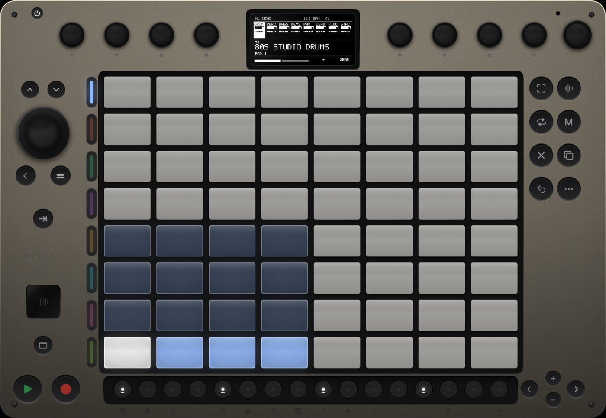
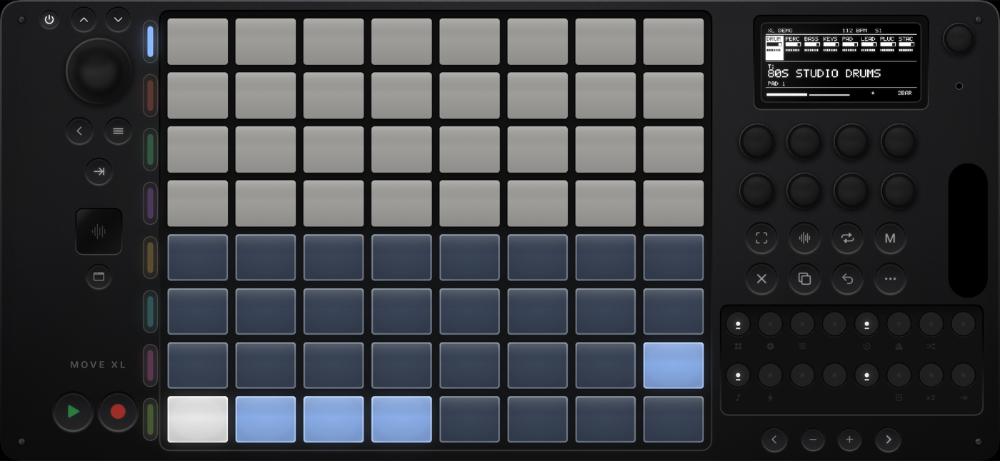
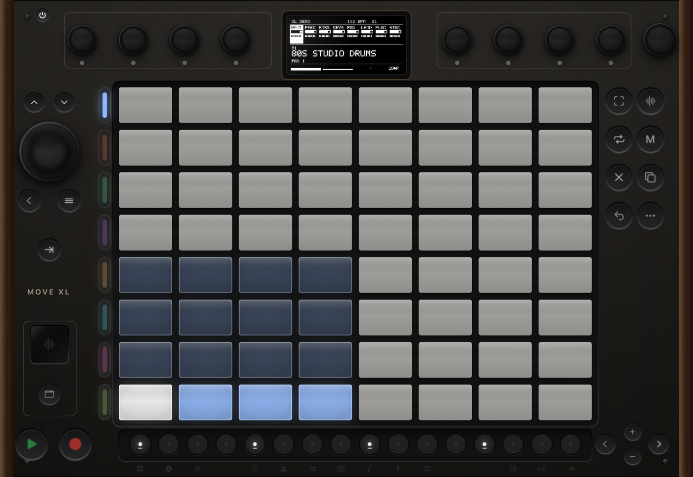

Overview
Motus XL is a standalone groovebox — an imagined big sibling of the Ableton Move with 8 tracks, an 8×8 pad grid, a 256×128 OLED, its own drum & synth engines, and full AUv3 plugin hosting. Everything runs on the device: sequencer, sounds, effects, and hardware control-surface support.


Two drum tracks and six synth tracks by default. Each track holds 8 clips (scenes) of up to 16 bars.
Panel Tour
| Control | Function |
|---|---|
| Wheel | Browse / set values. Press = confirm. On an AU track, press opens the preset browser; Shift+press cycles parameter banks. |
| ▲▼ (above wheel) | Wheel steps without turning. |
| Back | Exit menus; from Set Overview, return to the previous mode. |
| ≡ Note | Toggle Note ↔ Session mode. |
| Quantize | Apply quantize to the selected clip. |
| 8 Encoders | Sound macros or AU parameters (banked). On internal tracks: 1–5 = filter/amp macros, 6–8 = track volume / groove / tempo. Touch one during playback to override its automation. |
| Volume encoder | Main volume. Context-sensitive: held step = velocity, held track = track volume, held drum pad = sample gain, held Set pad = Set volume. |
| 8 Track buttons | Select track (LED = track color). Hold + Volume = track volume. Hold Mute + press = mute. |
| Right cluster | Capture Sample Loop Mute Delete Copy Undo Shift |
| 16 Steps | The step sequencer row. With Shift, a function row (see reference). |
| ◀▶ | Move between bars (and grid pages). With steps held: nudge notes. |
| −+ | Octave (melodic). With steps held: transpose ±1 semitone (hold = ±octave). |
| ⏻ | Power. Press, then press the wheel to confirm off. Press again to wake. |
| Plugin bay | Glass window shows the loaded AU's icon; the button under it opens the plugin's own UI. |
Playing
Melodic tracks
64 pads. In-Key layout (default): each row is an octave walking the scale; root notes glow in the track color, other scale notes light gray. Chromatic layout: fretboard style — right = +1 semitone, up = a fourth; out-of-scale pads are unlit but still play. Switch layouts in Shift+Step 9 Key & Scale (first row).
Drum tracks
The classic 4×4 cell layout sits on the bottom-left of the grid. Pads with a loaded sample are dimly lit; the selected cell is white; cells with notes glow in the track color. Hold a pad + turn Volume for per-cell sample gain. Hold Mute + pad mutes a cell.
Recording & Capture
Record
- Record while stopped: one-bar count-in (if on), then recording starts.
- Record while playing: toggles overdub recording.
- Recording into an empty clip keeps extending it (whole bars, up to 16) until you stop.
- Switching tracks stops the recording pass. Notes are pulled 50% toward the grid by default (see Workflow).
Capture
The XL is always listening. Play freely, then press Capture:
- While playing — the last loop of everything you played lands in the playing clips.
- While stopped — the last ~16 seconds are analyzed, a tempo is detected from your playing, clips are created, and the transport starts.
- Shift+Capture clears the buffer.
Step Editing
Steps show the selected track's notes (drum tracks: the selected cell only). White = note, dim color = empty, green = playhead. Press an empty step to add a note; briefly press a lit step to remove it.
Hold a step (or several), then…
| Gesture | Edit |
|---|---|
| + turn Volume | Velocity |
| + turn Wheel | Note length (10% of a step per click) |
| + −/+ | Transpose ±1 semitone (long-press = ±1 octave) |
| + ◀/▶ | Nudge 10% (with Shift: 1%; long-press: a full step) |
| + press pads | Add those pitches to the held steps ("step-then-pad") |
| + turn an encoder | Write per-step automation for that parameter |
Holding a step also lights the pads for the notes it contains. Navigating one bar past the end shows an empty "+" bar — add notes to keep it.
Loop Mode
Press Loop: steps become bars (max 16). White = selected bar, track color = in the loop, dim = outside.
- Press two steps (or hold one, press another) = loop region start/end.
- Double-press a step = loop just that bar. Notes before the loop start stay but don't play.
- Turn the wheel = loop length in bars.
- Hold a bar + wheel/Volume/±/arrows = bulk-edit every note in it; + a pad = fill the bar with that note.
- Delete + bar step = clear the bar's notes. Copy + bar = copy it (press a destination bar to paste — pasting past the end extends the loop).
- Shift+Step 15 = Double Loop (content included).
Copy & Paste
| Gesture | Result |
|---|---|
| Copy tap (Note mode) | Duplicate the clip to the next empty scene |
| Hold Copy + step | Copy that step's notes (+ automation) |
| Hold Copy + step A + step B | Copy the range A–B |
| Then press any step | Paste starting there (extends the loop if needed) |
| Session: hold Copy + pad, then a pad | Copy / paste clips anywhere |
| Set Overview: hold Copy + pad, then a pad | Copy a Set (overwriting asks for a second press) |
| Copy tap with clipboard loaded | Clear the clipboard |
Step Grid & Workflow
Shift+Step 3 opens Workflow: Quantize % (default 50), Step Grid, Count-In, Autoload. Wheel-press moves rows; turn to set.
Step Grid: 1/8 · 1/16 · 1/16T · 1/32. Finer grids page within the bar (◀/▶ show "BAR n PAGE m"). Triplet grids deactivate every 4th button to keep the beat honest. Recording quantize pulls to the active grid.
Sounds & AU Plugins
Wheel press on a track opens the browser: drum kits or internal synth presets, followed by every installed AUv3 instrument. With Autoload on, sounds preview as you scroll. Press the wheel to load.
AU tracks
- Encoder 1 = track volume; encoders 2–8 = a bank of 7 plugin parameters. Shift+wheel-press cycles banks; the display maps the knobs.
- Wheel press opens the preset browser (live preview; Back rolls back; "< CHANGE SOUND" returns to instruments).
- The plugin bay button opens the AU's own interface in a sheet.
Hiding plugins
Don't want a plugin cluttering the browser? Highlight it and press Delete + wheel-press — it's hidden (persists). Restore them all from the AU HIDDEN row in Setup.
Automation
- Record: while recording, turn any encoder — moves are written into the clip and replay in the loop.
- Override: during playback, touch/turn an encoder to take over; release to resume the recorded automation.
- Deactivate a lane: hold Mute + tap the encoder (kept but silent; tap again to re-enable).
- Delete a lane: hold Delete + tap the encoder.
- Per-step: hold step(s) and turn an encoder to write values at exactly those steps.
Works for internal macros and AU parameters alike (automated AU params show a * on the knob map). Capture grabs automation too.
Set Effects & Mixing
Every Set has a master chain: Dynamics → Saturator. In Session mode, turn the wheel to focus one, then encoders 1–3 edit it (Threshold/Ratio/Makeup · Drive/Color/Mix).
Mixing: track-hold + Volume = track level; Mute alone = mute the selected track; Mute + track button = mute any track; encoder 5 = delay send (internal tracks).
Sidechain SHIFT+12
Per-track ducking. Pick a source track (and, for a drum source, the trigger cell), then set amount and release. Wheel-press moves rows; turn to set. Great for pumping a pad or bass against the kick.
Layouts, 16 Pitches & Repeat/Arp
Key & Scale SHIFT+9
Rows: Layout (In-Key / Chromatic), Key, Scale. Wheel-press moves rows. Changing key/scale never moves existing notes. Saved with the Set.
16 Pitches SHIFT+8
Drum tracks: the right 4×4 plays the selected cell across 16 pitches following the active layout (root = track color). Pitched hits record and sequence like any note. −/+ shifts the octave.
Repeat / Arp SHIFT+11
Held pads retrigger at the chosen rate (1/4 … 1/32, incl. triplets). Melodic tracks add styles: Repeat, Arp Up, Arp Down, Arp Random. Repeats record like played notes. Toggle off with the same combo.
Session Mode
Press ≡. The grid becomes rows = 8 tracks × columns = 8 scenes.
- Pad = launch that track's clip, quantized to the next bar. Empty slot = stop that track.
- Shift + pad = select without launching.
- Pulsing green = queued · pulsing color = playing · dim pulse = stopping.
- Steps: odd = select track, even = stop track. Delete/Copy + pad = clear / copy clips.
Sets SHIFT+1
64 slots on the grid. Press a pad to select, then:
- Play = preview the selected Set.
- Track button / Back / ≡ = open it.
- Shift + pad = Set color menu.
- Hold pad + Volume = Set volume (scales all tracks).
- Delete + pad, then again = delete (two-press confirm).
Sets auto-save continuously.
Launchkey Mini 37 MK4
Plug into the iPad over USB-C — it connects automatically ("MOTUS XL" appears on its screen, which then mirrors the XL's display live).
| Control | Does |
|---|---|
| Keys | Play/record/capture the selected track (drums: chromatic cells from C2) |
| 16 pads | 3 layers — SESSION (top = tracks, bottom = clip launch), DRUM (16 velocity cells), STEP (live step row) |
| Pad-mode button | Cycle layers · Shift+it = toggle Session ↔ Note mode |
| 8 knobs | Knobs 1–7 = encoders 1–7 (macros / AU banks); the 8th knob is the browse / value wheel · touching overrides automation |
| ◀▶ arrows | AU parameter bank · Shift = loop length ± |
| Track −/+ | Select track · Shift = scene ± · in STEP layer = bar page |
| Play / Record | Transport · Shift+Record = Capture |
| Pitch / Mod strips | Pass through to AU tracks |
Launchpad Mini MK3
A true 1:1 hardware mirror of the 8×8 grid — every pad layout (melodic, drum, session, Set Overview) appears on it automatically in full RGB, with tempo-synced pulsing.
| Control | Does |
|---|---|
| 8×8 grid | Exactly the on-screen pads |
| Right column | Session: launch scenes 1–8 · Note mode: select tracks 1–8 |
| ▲▼◀▶ | ▲▼ = loop length ± · ◀▶ = previous / next sound (patch) |
| Session / Drums / Keys / User | Note↔Session · Play · Record · Capture |
Shift Function Reference
| Combo | Function |
|---|---|
| Shift+1 | Set Overview |
| Shift+2 | Setup (theme, chassis color, hidden AUs) |
| Shift+3 | Workflow (quantize %, step grid, count-in, autoload) |
| Shift+5 | Tempo |
| Shift+6 | Metronome |
| Shift+7 | Groove / swing |
| Shift+8 | 16 Pitches (drum tracks) |
| Shift+9 | Key & Scale (+ In-Key/Chromatic) |
| Shift+10 | Full Velocity |
| Shift+11 | Repeat / Arp |
| Shift+12 | Sidechain / ducking (per-track: source, drum cell, amount, release) |
| Shift+14 | Prepare next empty clip slot |
| Shift+15 | Double Loop |
| Shift+16 | Quantize clip |
| Shift+Play | Restart from the top |
| Shift+Undo | Redo |
| Shift+Capture | Clear capture buffer |
| Shift+wheel-press | Next AU parameter bank |
Setup, Themes & Power

Shift+Step 2: THEME (Hardware / Bare / Vintage walnut), COLOR (7 chassis tints), AU HIDDEN (turn to restore hidden plugins), LK SCREEN (Launchkey display orientation). Wheel-press moves rows, turn sets.
Tilt the device — the panel lighting (knob reflections, screen glare, pad sheen) follows the room light via the accelerometer.
⏻ then wheel-press powers down (screen, LEDs, and any connected control surfaces go dark; input is inert). Press ⏻ to boot.